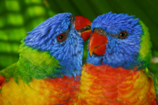

{kind=link}
Lorikeets the Clowns
Lorikeets are the clowns of the bird world. Just like a clown they have an unmistakable bright red beak and colourful plumage and they are mischievous and noisy making sure that all eyes are on them. Those that keep lorikeets describe them as addictive since watching their cheeky antics can keep them from doing anything else for hours.
There are two main groups of lorikeets – the small Australian lorikeets and the larger tropical lorikeets. The smaller varieties include the Purple-crowned and Little lorikeet which are around 19cm in length. They are fairly quiet, tend not to talk and have a lifespan of around 10 years. Tropical lorikeets live up to 20 years and are around 30cm long; they are excellent talkers and varieties include the common Rainbow and Red-collared lorikeet.
Smaller lorikeets make better pets because of their softer bite but the two most commonly kept species of lorikeet are the larger Rainbow and the Scaly-breasted Lorikeets. A well-trained Rainbow is playful, loves to dance, enjoys a chat and provides lots of fun and companionship. All lorikeets are mischievous and energetic but since they have quite messy eating and toiletry habits they do need an owner that is diligent with their cleaning and willing to spend time caring for them.
There are populations of rainbow lorikeets around the suburbs of Perth due to aviary releases but they occur mostly in coastal regions across northern and eastern Australia.
Hand-reared lorikeets make excellent pets for those that have the time to spend with them and both the male and female can be trained to talk however they do need to be handled and given attention every day otherwise they will lose their willingness to be held or sit with their owner. It is surprising how much time must be dedicated to a hand-reared bird but for them, their owner is their companion and since lorikeets are highly gregarious it is essential that they are given plenty of attention.
For those that don’t have the time for this, a pair or colony of lorikeets in an aviary is a better choice and still provides all the fun and sounds of a backyard bird circus. The lorikeets will bond with each other and so not demand so much time from the owner. In large numbers though, lorikeets will chatter and make high pitched shrieks which owners often enjoy but this may not always be to the liking of neighbours early on a lovely spring morning.
Rainbow lorikeets can breed all year round producing up to two eggs each time. They will breed from about 12 months either in colonies or as a breeding pair in an individual aviary.
CHOOSING A LORIKEET
There are six different native species of lorikeets as well as some that are exotic that are available from specialist bird breeders. Choose the breeder before the bird ensuring that their cages are clean and the food and water fresh as this will be an indication of the health of the bird. It is illegal to take native birds from the wild to keep in an aviary.
A healthy lorikeet will be bright and active with smooth feathers. Make sure that the beak is clean, the eyes clear and bright and that there are no broken feathers. The feet should also be clean and the nails not too long. In most cases it is very difficult to determine the sex of the bird since both the male and female lorikeets look the same and so DNA sexing may be required.
FOOD & WATER
Lorikeets have quite specific dietary needs since they eat mainly nectar and pollen and their gizzards are not designed to grind seed. Instead they have a brush-like tongue that they use to collect nectar and pollen as well as a small amount of insects, fruits and berries.
Commercial lorikeet mixes are now available which include a wet and a dry food. Wet mix is not essential to lorikeets but if it is provided, it should be removed after a couple of hours as on a warm day, bacteria will breed quickly. Supplement commercial food with fresh fruit and vegetables as well as native eucalypt, bottle brush or grevillia flowers. Vitamins and calcium supplements should also be provided regularly. Do not give chocolate or avocado and if stone fruit is offered in summer, remove it after a very short time. Uneaten food should be removed daily and the bowls thoroughly cleaned before fresh food is offered.
Add a bird bath and plenty of fresh water for the lorikeets as they are mad about water and love to splash around. They also become almost idiotic if there is rain or the sprinklers are turned on.
AVIARIES
A single hand-reared lorikeet can live in a large flight cage inside the house but it will need plenty of opportunities to fly around the house and spend time with the family. Remember though that they produce extremely wet droppings and can chew if left unattended so some preparation to the home will be necessary.
Small Australian lorikeets will co-exist in pairs in a planted aviary with other species such as finches and doves so long as the area is large enough and not overcrowded but choosing to mix species requires some investigation to ensure that there is no fighting over territories and so the advice of an experienced bird breeder is worth seeking. Larger tropical and exotic lorikeets should never be kept with other parrot species and care must be taken in a mixed aviary.
Aluminium aviaries are far better than wooden structures for lorikeets since they are more easily cleaned and maintained. These birds produce large amounts of very liquid droppings so having a sloping concrete floor that can be pressure cleaned or hosed is best. Suspended aviaries that allow the droppings to fall through onto the ground are also good and will keep the birds clean and healthy though they do make it harder to catch the birds. Use a double layer of wire on the cage so that there is a gap of about 25mm in between to provide protection from other predatory or neighbouring birds that may attack through the wire.
The boisterous nature of the larger lorikeets means that they must have an aviary that is quite large. If keeping a pair or small colony, aim for one that is at least four metres long and two metres high.
Although lorikeets will enjoy a planted aviary, the larger birds will chew at the leaves and stems so the plants will need to be replaced every now and then. They do however enjoy having eucalypt branches in their aviary as perches and climbing frames. Attach a short length of 50mm PVC pipe to the frame fairly high inside the cage to place branches of flowers and trees into so that when it is shredded the foliage can be easily replaced.
Provide some protection from the elements by ensuring that part of the aviary roof and wall is covered and that the area receives shade from trees or shadecloth in summer.
SYMPTOMS OF ILLNESS
Lorikeets are hardy birds with a lifespan of around 10 years for small varieties and up to 20 to 25 years for the larger birds. As with all birds, the key to their health is ensuring good hygiene practices with the aviary and providing a healthy and varied diet.
Most birds will show similar symptoms if they are unwell which include fluffing up and ruffled feathers, diarrhoea, vomiting, watery eyes and lack of energy. They may sit in one spot, sleep a lot and perhaps have a loss of balance. By the time a bird is noticeably ill, the chances are that the problem has been developing for some time and so it is important to take action quickly.
In general, it is far better to seek the advice of a veterinarian instead of trying home treatments or the “wait and see” approach when dealing with birds as it is difficult to diagnose the problem. Keep the bird warm until medical assistance can be sought. There are several veterinarians specialising in birds in WA and your own vet will be able to recommend the one that is closest to you.
Pet Care
- Dogs & Puppies
- Puppy Care
- Training and Socialising
- When and How to use a Dog Head Halter
- How to use a Dog Muzzle
- Great Crate Games
- Keeping Dogs Entertained
- Can Cats and Dogs be Friends?
- Fireworks and Storms
- Socialising Dogs
- Safe Dogs, Safe Kids
- Mat Training for Dogs
- A Mounting Problem
- Crate Training
- Separation Anxiety
- Dogs at the Beach
- Guide Dog Etiquette
- Who’s Walking Who?
- Dog Accessories
- Food and Diet
- Grooming and Bathing
- Health and First Aid
- Pet Poison
- Pet Emergencies and First Aid
- Dealing with Snake Bites
- Toxic Plants for Pets
- Heatstroke in Dogs
- Allergies in Cats and Dogs
- Dog Dental Care
- Removing Ticks from Pets
- Treating Ticks and Fleas
- Caring for a Blind Dog
- Pet Insurance
- Visiting the Vet
- Keeping Cats and Dogs Cool in Summer
- Keeping Pets Warm in Winter
- Treating Parasites & Diseases in Dogs
- Caring for Senior Dogs
- How to help a dog with sore Joints
- How to be an Environmentally Friendly Pet Owner
- Holidays and Travel
- Cats & Kittens
- Birds & Poultry
- Small Animals
- Dogs & Puppies